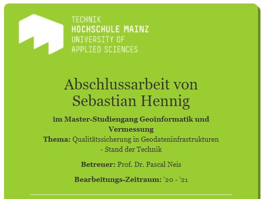

about
My name is Sebastian aka Sean de Basti and I am a cartographer with a passion for design and open source maps. I recently studied Cartography and Geomediatechnology at Dresden University of Technology.
You care to review my resume?
Phase 1 - Studies in Braunschweig
Having an apprenticeship for three years in surveying.
Example: First cycle tour and retrack with Outdooractive

Phase 2 - Studies in Dresden
Having a Bachelor Study in Cartography and Geomediatechnology at Dresden University of Technology

Phase 3 - Studies in Mainz
Having a Master Study in Geoinformatics
at Mainz University of Applied Sciences.
Thesis Topic: Quality Assurance in SDI - State of the Art
Job Phase 1 - Work in Braunschweig
As a surveying technician I worked with GIS in Land development cadastre agency

Job Phase 2 - Work in Munich
As surveying technician I worked with geodata acquisitions department of an federal agency
Job Phase 3 - Work in Berlin
As geospatial engineer I worked within an department while processing and extracting vector & raster data and OGC web services."